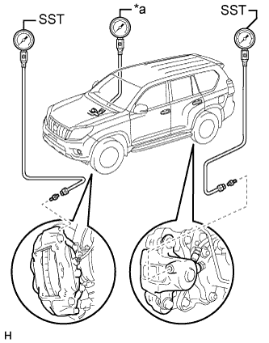

ГИДРАВЛИЧЕСКИЙ УСИЛИТЕЛЬ ТОРМОЗНОЙ СИСТЕМЫ (для моделей с левосторонним рулевым управлением) > ПРОВЕРКА БЕЗ СНЯТИЯ С АВТОМОБИЛЯ |
| 1. ПРОВЕРЬТЕ ИЗМЕНЕНИЕ ДАВЛЕНИЯ ЖИДКОСТИ В ГЛАВНОМ ЦИЛИНДРЕ ТОРМОЗНОЙ СИСТЕМЫ |
|  |
Проверьте напряжение аккумуляторной батареи.
Выключите зажигание и нажмите педаль тормоза не менее 40 раз.
Установите измерительный прибор LSPV (SST) и указатель усилия на педали тормоза, а затем удалите воздух.
| *a | Указатель усилия на педали тормоза |
Когда усилитель не работает:
Нажмите на педаль тормоза и проверьте давление жидкости.
| Давление для переднего тормоза | Давление для заднего тормоза |
| 2950 кПа (30,1 кгс/см2, 428 фунтов на кв. дюйм) или выше | 0 кПа (0 кгс/см2, 0 фунтов на кв. дюйм) |
| Давление для переднего тормоза | Давление для заднего тормоза |
| 4200 кПа (42,8 кгс/см2, 609 фунтов на кв. дюйм) или выше | 0 кПа (0 кгс/см2, 0 фунтов на кв. дюйм) |
Когда усилитель работает:
Нажмите на педаль тормоза и проверьте давление жидкости.
Включите зажигание и подождите, пока электродвигатель насоса остановится.
Нажмите на педаль тормоза и проверьте давление жидкости.
| Давление для переднего тормоза | Давление для заднего тормоза |
| 1570 - 2770 кПа (16,0 - 28,3 кгс/см2, 228 - 402 фунтов на кв.дюйм) | 1780 - 2980 кПа (18,2 - 30,4 кгс/см2, 258 - 432 фунтов на кв.дюйм) |
| Давление для переднего тормоза | Давление для заднего тормоза |
| 4220 - 5420 кПа (43,0 - 55,3 кгс/см2, 612 - 786 фунтов на кв.дюйм) | 4540 - 5740 кПа (46,3 - 58,5 кгс/см2, 659 - 833 фунтов на кв.дюйм) |
| Давление для переднего тормоза | Давление для заднего тормоза |
| 6880 - 8080 кПа (70,2 - 82,4 кгс/см2, 998 - 1172 фунтов на кв.дюйм) | 7310 - 8510 кПа (74,5 - 86,8 кгс/см2, 1061 - 1235 фунтов на кв.дюйм) |
| Давление для переднего тормоза | Давление для заднего тормоза |
| 9530 - 10730 кПа (97,2 - 109,4 кгс/см2, 1383 - 1557 фунтов на кв.дюйм) | 10070 - 11270 кПа (102,7 - 114,9 кгс/см2, 1461 - 1635 фунтов на кв.дюйм) |
| 2. ПРОВЕРЬТЕ РАБОТУ ГЛАВНОГО ЦИЛИНДРА ТОРМОЗНОЙ СИСТЕМЫ |
Проверьте напряжение аккумуляторной батареи.
Выключите зажигание и нажмите педаль тормоза более 20 раз.
Убедитесь, что сила реакции педали тормоза уменьшается.
Если сила реакции педали не уменьшается, проверьте и при необходимости замените трубопровод тормозной системы и главный цилиндр тормозной системы.
Включите зажигание и проверьте звук работы электродвигателя насоса. Если электродвигатель насоса не работает, проверьте и при необходимости замените жгут проводов и электродвигатель насоса (Нажмите здесь).
Подсоедините портативный диагностический прибор к DLC3.
Установите замок зажигания в положение ON (ВКЛ).
Включите портативный диагностический прибор.
Войдите в следующие меню: Chassis / ABS/VSC/TRC / Active Test.
Поддомкратьте и подоприте автомобиль.
Отпустите рычаг стояночного тормоза.
Переведите рычаг переключения передач в положение N и убедитесь, задние колеса можно вращать вручную.
Проверьте работу переднего электромагнитного клапана VSC (SMCF).
Выберите на экране портативного диагностического прибора "VSC/TRC Solenoid (SRCF)".
Включите "VSC/TRC Solenoid (SRCF)" с помощью портативного диагностического прибора, нажмите педаль тормоза с постоянным усилием и убедитесь, что она не нажимается.
Если педаль нажимается, замените главный цилиндр тормозной системы.
Отпустите педаль тормоза.
Когда электромагнитный клапан выключен, снова нажмите педаль тормоза и убедитесь, что она нажимается.
Если педаль не нажимается, замените главный цилиндр тормозной системы.
Проверьте работу переднего электромагнитного клапана VSC (SREA).
Выберите на экране портативного диагностического прибора "VSC/TRC Solenoid (SRCR)" и "VSC/TRC Solenoid (SRCF)".
Одновременно включите "VSC/TRC Solenoid (SRCR)" и "VSC/TRC Solenoid (SRCF)" с помощью портативного диагностического прибора, а затем нажмите педаль тормоза с постоянным усилием.
Когда электромагнитные клапаны включены, убедитесь, что передние колеса невозможно вращать вручную.
Если передние колеса вращаются, замените главный цилиндр тормозной системы.
Когда электромагнитные клапаны выключены, вновь включите "VSC/TRC Solenoid (SRCF)", а затем нажмите педаль тормоза. Проверьте передние колеса, вращая их вручную.
Если передние колеса не вращаются, замените главный цилиндр тормозной системы.
Когда "VSC/TRC Solenoid (SRCF)" выключен, снова нажмите педаль тормоза и убедитесь, что она нажимается.
Если педаль не нажимается, замените главный цилиндр тормозной системы.
Проверьте работу переднего электромагнитного клапана ABS (SFRH).
Выберите "ABS Solenoid (SFRH)" на экране портативного диагностического прибора.
Включите "ABS Solenoid (SFRH)" с помощью портативного диагностического прибора, а затем нажмите педаль тормоза с постоянным усилием.
Когда электромагнитный клапан включен, проверьте правое переднее колесо, поворачивая его вручную.
Если правое переднее колесо не вращается, замените главный цилиндр тормозной системы.
Когда электромагнитный клапан выключен, снова нажмите педаль тормоза и убедитесь, что правое переднее колесо не вращается вручную.
Если правое переднее колесо вращается, замените главный цилиндр тормозной системы.
Проверьте работу переднего электромагнитного клапана ABS (SFLH).
Выберите "ABS Solenoid (SFLH)" на экране портативного диагностического прибора.
Включите "ABS Solenoid (SFLH)" с помощью портативного диагностического прибора, а затем нажмите педаль тормоза с постоянным усилием.
Когда электромагнитный клапан включен, проверьте левое переднее колесо, поворачивая его вручную.
Если левое переднее колесо не вращается, замените главный цилиндр тормозной системы.
Когда электромагнитный клапан выключен, снова нажмите педаль тормоза и убедитесь, что левое переднее колесо не вращается вручную.
Если левое переднее колесо вращается, замените главный цилиндр тормозной системы.
Проверьте работу переднего электромагнитного клапана ABS (SFRR).
Выберите "ABS Solenoid (SFRR)" и "ABS Solenoid (SFRH)" на экране портативного диагностического прибора.
Нажмите педаль тормоза с постоянным усилием, а затем одновременно включите "ABS Solenoid (SFRR)" и "ABS Solenoid (SFRH)" с помощью портативного диагностического прибора.
Когда электромагнитные клапаны включены, проверьте правое переднее колесо, поворачивая его вручную.
Если правое переднее колесо не вращается, замените главный цилиндр тормозной системы.
Когда электромагнитные клапаны выключены, снова нажмите педаль тормоза и убедитесь, что правое переднее колесо не вращается вручную.
Если правое переднее колесо вращается, замените главный цилиндр тормозной системы.
Проверьте работу переднего электромагнитного клапана ABS (SFLR).
Выберите "ABS Solenoid (SFLR)" и "ABS Solenoid (SFLH)" на экране портативного диагностического прибора.
Нажмите педаль тормоза с постоянным усилием, а затем одновременно включите "ABS Solenoid (SFLR)" и "ABS Solenoid (SFLH)" с помощью портативного диагностического прибора.
Когда электромагнитные клапаны включены, проверьте левое переднее колесо, поворачивая его вручную.
Если левое переднее колесо не вращается, замените главный цилиндр тормозной системы.
Когда электромагнитные клапаны выключены, снова нажмите педаль тормоза и убедитесь, что левое переднее колесо не вращается вручную.
Если левое переднее колесо вращается, замените главный цилиндр тормозной системы.
Проверьте работу заднего электромагнитного клапана VSC (SREC).
Выберите на экране портативного диагностического прибора "VSC/TRC Solenoid (SRMF)".
Нажмите педаль тормоза с постоянным усилием, а затем включите "VSC/TRC Solenoid (SRMF)" с помощью портативного диагностического прибора.
Отпустите педаль тормоза, когда электромагнитный клапан включен, и убедитесь, что задние колеса не вращаются вручную.
Если задние колеса вращаются, замените главный цилиндр тормозной системы.
Когда электромагнитный клапан выключен, проверьте задние колеса, поворачивая их вручную.
Если задние колеса не вращаются, замените главный цилиндр тормозной системы.
Проверьте работу заднего электромагнитного клапана VSC (STR).
Выберите на экране портативного диагностического прибора "VSC/TRC Solenoid (SRMR)" и "VSC/TRC Solenoid (SRMF)".
Одновременно включите "VSC/TRC Solenoid (SRCR)" и "VSC/TRC Solenoid (SRCF)" с помощью портативного диагностического прибора.
Когда электромагнитные клапаны включены, убедитесь, что задние колеса можно вращать вручную.
Если задние колеса вращаются, замените главный цилиндр тормозной системы.
Когда электромагнитные клапаны выключены, вновь включите "VSC/TRC Solenoid (SRMF)" и проверьте задние колеса, вращая их вручную.
Если задние колеса не вращаются, замените главный цилиндр тормозной системы.
Когда "VSC/TRC Solenoid (SRMF)" выключен, снова нажмите педаль тормоза и убедитесь, что задние колеса не вращаются вручную.
Если задние колеса вращаются, замените главный цилиндр тормозной системы.
Проверьте работу заднего электромагнитного клапана ABS (SRRH).
Выберите "ABS Solenoid (SRRH)" на экране портативного диагностического прибора.
Включите "ABS Solenoid (SRRH)" с помощью портативного диагностического прибора, а затем нажмите педаль тормоза с постоянным усилием.
Когда электромагнитный клапан включен, проверьте правое заднее колесо, поворачивая его вручную.
Если правое заднее колесо не вращается, замените главный цилиндр тормозной системы.
Когда электромагнитный клапан выключен, снова нажмите педаль тормоза и убедитесь, что правое заднее колесо не вращается вручную.
Если правое заднее колесо вращается, замените главный цилиндр тормозной системы.
Проверьте работу заднего электромагнитного клапана ABS (SRLH).
Выберите "ABS Solenoid (SRLH)" на экране портативного диагностического прибора.
Включите "ABS solenoid (SRLH)" с помощью портативного диагностического прибора, а затем нажмите педаль тормоза с постоянным усилием.
Когда электромагнитный клапан включен, проверьте левое заднее колесо, поворачивая его вручную.
Если левое заднее колесо не вращается, замените главный цилиндр тормозной системы.
Когда электромагнитный клапан выключен, снова нажмите педаль тормоза и убедитесь, что левое заднее колесо не вращается вручную.
Если левое заднее колесо вращается, замените главный цилиндр тормозной системы.
Проверьте работу заднего электромагнитного клапана ABS (SRRR).
Выберите "ABS Solenoid (SRRR)" и "ABS Solenoid (SRRH)" на экране портативного диагностического прибора.
Нажмите педаль тормоза с постоянным усилием, а затем одновременно включите "ABS Solenoid (SRRR)" и "ABS Solenoid (SRRH)" с помощью портативного диагностического прибора.
Когда электромагнитные клапаны включены, проверьте правое заднее колесо, поворачивая его вручную.
Если правое заднее колесо не вращается, замените главный цилиндр тормозной системы.
Когда электромагнитные клапаны выключены, снова нажмите педаль тормоза и убедитесь, что правое заднее колесо не вращается вручную.
Если правое заднее колесо вращается, замените главный цилиндр тормозной системы.
Проверьте работу заднего электромагнитного клапана ABS (SRLR).
Выберите "ABS Solenoid (SRLR)" и "ABS Solenoid (SRLH)" на экране портативного диагностического прибора.
Нажмите педаль тормоза с постоянным усилием, а затем одновременно включите "ABS Solenoid (SRLR)" и "ABS Solenoid (SRLH)" с помощью портативного диагностического прибора.
Когда электромагнитные клапаны включены, проверьте левое заднее колесо, поворачивая его вручную.
Если левое заднее колесо не вращается, замените главный цилиндр тормозной системы.
Когда электромагнитные клапаны выключены, снова нажмите педаль тормоза и убедитесь, что левое заднее колесо не вращается вручную.
Если левое заднее колесо вращается, замените главный цилиндр тормозной системы.
Опустите автомобиль.
Отсоедините портативный диагностический прибор.
| 3. ПРОВЕРЬТЕ УРОВЕНЬ ЖИДКОСТИ В БАЧКЕ |
 |
Выключите зажигание и не менее 40 раз до упора нажмите педаль тормоза, чтобы сбросить давление в гидроаккумуляторе.
Установите уровень жидкости на отметке MAX.